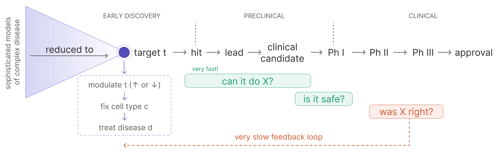

How AI can actually move the needle for drug discovery
‘Drug discovery’ is an overloaded term
Drugs rarely fail because they can’t do what they were designed to do.
We — collectively, as a field — have become remarkably good at building molecules that exert a particular function. We can do it even against targets once written off as undruggable (see: pan-KRAS inhibitors), and increasingly we can build molecules that exert a set of coordinated functions at once (see: the proliferation of bi-, tri-, and multispecifics). The engineering of “make a thing that does X” is no longer the rate limiting step.
And yet most drugs still fail. They fail in the clinic, late and expensively, after the molecule has been shown to do exactly what it was built to do. They fail because X was the wrong thing to ask for — because the function the drug was designed for turned out not to treat the disease.
In other words: the drug did the thing, but the thing was wrong. There are multiple ways for “the thing” to be wrong. For example: it may be an effect rather than a cause, it may be right in one cell type and wrong in another, or it may be right in a preclinical model but irrelevant to the human biology.
This means the dominant failure mode in biotech is not an engineering failure. It is a specification failure: specifically, a failure to correctly specify what biology, if moved in the right direction, would alter disease pathology.
A corollary of this analysis is that “drug discovery”, and especially “AI for drug discovery” is an overloaded term that obscures where attention is most needed. It bundles together two very different activities:
- figuring out what the drug should do, and for which patients
- building a molecule (or molecules) that can do it
We have made tremendous progress on #2, using a beautiful explosion of experimental and (recently, increasingly) computational techniques.1 But attrition in clinical success is dominated by #1.
This is the next great frontier for AI in biology: not merely accelerating the construction of drugs, but learning what biology we should be trying to change. AI will be transformative for this challenge, but only if it can learn in a data-rich regime from causal experiments in models that preserve the disease biology we need to understand. To see why, we have to start with the central problem: why is specifying the right biological objective so hard?
Why is specifying the objective so difficult?
Reason #1: excess faith in the ‘needle-in-the-haystack’ view of target selection
Clinical translation has a compression problem: increasingly sophisticated models of disease complexity still tend to be reduced to single-target development programs.
Upstream, disease biology is increasingly described in high dimensions: multi-omic atlases, spatial context, interacting cell states, compensatory loops, temporal dynamics. Downstream, however, a therapeutic program gets reduced to a much simpler object via the following implicit syllogism:
- disease d is modeled as dysfunction of cell type c
- the activity of target t is what makes cell type c dysfunctional
- therefore, modulating t will rescue the phenotype of c, and ameliorate the effects of d

This framing has been handsomely, albeit infrequently, rewarded. The allure of discovering the next Keytruda (anti-PD1 monospecific) or Dupixent (anti-IL4R monospecific) is overwhelming.2
But the target is a convenient translational unit, not necessarily the biological unit of disease.
In many diseases, the relevant object is not a singular faulty component, but a system in a bad state.
Cancer is tumor cells embedded in a specific tissue context, surrounded by immune cells, stromal cells, cytokines, metabolites, extracellular matrix, and vasculature. Similarly, autoimmune diseases are dysregulated immune states that involve multiple cell types, compensatory pathways, the microbiome, and time.
In both cases, the disease pathology is mediated by the interaction of multiple cell types: the disease is an emergent phenomenon. It’s unsurprising then that many effective interventions may need to be multi-target, sequential, or context-specific. It is unlikely that the entire pathological disease state hinges on a singular node that just has to be plucked out of the proteome and activated or inhibited.
Reason #2: combination development is biased toward seeking additive effects
The natural response to reason #1 is: fine, then use combination therapies. But the way we develop combinations often preserves the same reductionist error.
Combination therapies are old news. Backbone chemo regimens are often combinations of multiple agents. Much of immuno-oncology since 2014 has been engaged in an exercise of “combine anti-PD1 with what?” And the impending patent cliffs of highly profitable I&I drugs have set off a quest to identify bispecifics to replace them.
But the development of such combinations is biased toward additive logic. Show that X has single-agent activity, show that Y has single-agent activity, and combine them into a regimen of X+Y — or if you need new chemical matter, combine them into a bispecific of XY.
The underlying assumption is that the right combination should be decomposable into independently useful parts. The contrapositive of this idea is that if a given target fails to manifest single-agent activity (or activity when combined with anti-PD1, the de facto I/O backbone), it is treated as unimportant, or at least clinically undevelopable.
This is clinically convenient, but often biologically wrong.
We need to take more seriously the idea — well-trodden in the preclinical literature and deep mechanistic dives of virtually any biological system — that non-linear, non-additive phenotypes are commonplace and intimately tied to fundamental disease pathology.
Non-linear phenotypes are hard to develop against because the relevant unit of biology is no longer the individual target. It is the interaction among dysregulated cellular phenotypes: the feedback loops, compensatory programs, timing effects, and higher-order dependencies that determine how the system evolves after perturbation.
This is especially true in multicellular disease states. Correcting an emergent phenotype may require pushing on several parts of the system at once, even if none of those components look compelling in isolation. The therapeutic effect may live in the higher-order interaction, which is exactly where the current development funnel is least systematic.
Reason #3: the intervention may be right for a particular state, but not for the entire disease
Even if the biological objective is correctly specified, the clinical test can still fail if the patient population is specified incorrectly. It is not enough to ask how to shift a given biological state; we also have to ask which patients are actually in that starting state.
Many disease categories are defined by a combination of anatomy and symptoms, while interventions act on biological states. This mismatch matters because a category like “lung cancer,” “colorectal cancer,” “rheumatoid arthritis,” or “IBD” may contain multiple underlying disease states, only some of which are relevant to a particular intervention.
So the ontological question becomes practically important: what cluster of dysregulated multicellular phenotypes do we lump together as a disease?
The current status quo defaults to an intervention scientifically designed to solve a specific dysregulated phenotype being applied to all patients whose disease falls within a category defined by gross anatomical location and fuzzy symptom grouping. The disease definition may include a variety of distinct biological states, only a subset of which map to the specific phenotype the intervention was designed to address.
This means a clinical trial can “fail” for reasons that are not cleanly interpretable. The intervention may have been wrong; or the intervention may have been right for a state that was present in only a minority of enrolled patients. In the latter case, the failure may actually be a disease-ontology failure.
Therefore, a more translationally useful categorization for both discovery and development may be necessary. We need ontologies that reflect the multicellular state at a biological level, in addition to or instead of purely anatomical/clinical definitions.
Oncology has already accepted this for targeted therapies: HER2, EGFR, ALK, BRAF, dMMR/MSI-H all show that specific tumor cell features can be more informative than tumor type for treatment selection. Consider gefitinib, which was initially developed for advanced non-small cell lung cancer (NSCLC) broadly, but failed to show convincing benefit in postmarketing studies. When later trials were limited to patients who had specific EGFR mutations (exon 19 deletions or L858R), it was a striking success. In retrospect, the original trials had not cleanly tested whether EGFR inhibition worked; they had tested whether EGFR inhibition worked when diluted across a broad anatomical category in which only a minority of patients had gefitinib-sensitive EGFR biology.
The next step is applying analogous logic to multicellular disease states. We know that such distinct states exist (e.g., CMS subtypes of colorectal cancer) and that they can associate with differential treatment response (e.g., in RA or across cancer types). The challenge is in designing interventions that are paired to the right states and identifying clinically testable biomarkers that can identify patients in those states.
These reasons help explain why drug development seems like it is getting harder over time. Many of the clearest single-axis opportunities in diseases with relatively simple causal structure have already been found. What remains is increasingly enriched for diseases where the relevant biology is multicellular, context-dependent, nonlinear, or poorly captured by existing disease categories. In other words, the remaining frontier is disproportionately made up of precisely the diseases where biological specification is hardest.
In all three cases, the failure is not that biology is unknowable. It is that we keep forcing disease into units that are easier to develop against: one target, one additive combination, one anatomical indication. The specification problem is the problem of choosing units of intervention and units of patient selection that match the actual structure of disease.
If the bottleneck is biological specification, what does an AI-for-drug-discovery system need to learn?
So what would let us specify biological objectives better; in the sense of yielding a higher clinical success rate?
The previous section points to three missing pieces of knowledge. We need to know what biological state actually drives the disease phenotype; what intervention can move that state; and which patients are actually in the state the intervention is meant to correct.
These are prediction questions about the system. Given a starting state and a perturbation, what future state should we expect (e.g., move toward resolution / compensate back to the disease attractor state / or shift into a different pathological state)?
Learning a map over high-dimensional biological state space is a natural use case for AI. The useful object is a computational model of (state, intervention) → state′. If that mapping can be learned, the specification problem starts to look like a control problem: choose interventions that predictably navigate a diseased system from its current state toward a desired future state.
How can AI learn this?
Approach #1. LLMs reign supreme: the necessary data is latent in the literature.
Consider the world where reasoning alone is the bottleneck to identifying cures.
In this world, the missing map already exists, just not in a usable form. Decades of biology have produced an enormous, distributed record of perturbation and response: knockouts, overexpression studies, cytokine stimulations, drug treatments, mouse models, in vitro assays, clinical observations, failed trials. LLM reasoning ability, particularly for information synthesis, is already superhuman. It follows that what we need to do is simply turn LLMs onto the right problems and dutifully execute their clinical vision.
The bet is that a latent transition model can be extracted from the data we already have: read the literature, reconcile contradictions, connect mechanisms, and infer which perturbations should move which disease states.
This is an enticing belief to adopt because it implies that we should be generating many more cures right now. This is a notion to take seriously, but it’s likely insufficient.
LLMs are great at generating an abundance of plausible hypotheses with extreme efficiency. In settings where the relevant facts are known with certainty, and/or the correctness of outputs can be automatically and cheaply verified (as in mathematics or programming), this can be enough.
The primary problem in biology with a purist-reasoning approach is the absence of a tight causal testing loop. Coding agents have become so good because they can be trained with self-play: write code → run it → observe the consequences → immediately ascertain success or failure. Even if humans are needed in-the-loop for evaluation, it is easy to identify what the system needs more examples of, collect them, and improve. There is no killer distributional gap between training and test-time activity: the task used for system evaluation is the task the system is expected to perform when deployed. The purist-reasoning approach in biology does not have an equivalent loop. It can generate hypotheses that are plausible, mechanistically elegant, and well-supported by fragments of the literature, while still failing when tested in the relevant multicellular disease state.
There is a second, related problem: the literature is not a neutral sample of biological possibility. It is cursed by the streetlight problem: it overrepresents targets, pathways, model systems, and combinations that have borne historical fruit, and underrepresents the regions of perturbational space that no one had a reason, tool, or incentive to explore.
There is still a meaningful slice of progress a purist-reasoning approach could make, like areas where inter-field insights have failed to cross-pollinate. But this route ultimately depends on the assumption that the missing transition model is already implicit in available knowledge. If the problem is instead missing causal data, then reasoning alone will not be enough.
Approach #2. Run (many) more clinical trials: there’s no substitute for the real thing
If the limitation of pure reasoning is missing causal data, the most obvious response is to generate that data in humans.
Clinical trials are the highest-fidelity perturbation experiments we have. Start with a real disease state, administer an intervention, and observe what happens. For drug development, there is ultimately no substitute for this. A therapy must work in actual patients, not in a model of patients. But as a learning loop, clinical development has severe structural limitations.
Most clinical data, especially for new biological hypotheses, is generated by for-profit institutions with no incentive to share the results of failed trials. Even for successful trials, data sharing is often limited to topline results sufficient to obtain regulatory approval. Data on the profile of non-responders, arguably the most valuable data for the next wave of discovery, is often not collected deeply enough or remains a closely guarded secret.
Even if all that data were available, the cost of drug development makes it prohibitive to run enough experiments. Clinical trials sit on the Pareto frontier of cost vs value-per-datapoint, but very far out on one side of the graph: incredibly valuable, incredibly expensive.
There is also a fundamental speed limit. Even with unlimited capital and an abundance of hypotheses, the time to learn whether an intervention worked is bound by the time it takes for the intervention and disease response to play out in a human subject. This is poorly matched to the rapid data generation cycle needed for closed-loop AI improvement.
Clinical trials are also not compatible with counterfactuals. You observe what happened under the chosen intervention, but you do not get to observe what would have happened to the same patient under a different intervention, different sequence, different dose, or no intervention at all.
So clinical trials are the highest-fidelity experiments, but they are too sparse, slow, expensive, and non-counterfactual to be the main training loop. They are the final arbiter of whether a model is useful but cannot be the only way the model learns.
![A plot of cost and time per datapoint (x-axis, from cheaper and scalable to costly and slow) against value per datapoint (y-axis, low to high). A gray dashed ‘current frontier’ rises through four points: existing literature (#1, cheap and low value), single cell type culture, in vivo models, and clinical trials (#2, costly and high value). An orange curve labeled ‘at-scale multicellular causal data (#3)’ bulges above the frontier at moderate cost, with an upward arrow, depicting a lift in value per datapoint.](pareto-frontier.png)
Approach #3. Collect scaled causal data that reflects disease complexity
The real thing clinical trials provide, and pure reasoning lacks, is causal evidence. Do a thing → observe what happens as a direct consequence of the thing you did. This is what allows efficient learning. Rather than only trying to extract more signal from the low-data regime of clinical trials, the AI-centric strategy is to generate relevant causal data at scale.
So, let’s relax the constraint that our causal experiments be conducted in humans and ask what features a useful proxy would need to retain.
The experimental proxy should match the structure of the disease. For multicellular immune-mediated diseases, that cannot be a simple single cell type monoculture optimized for throughput. It needs to support the things that make the disease hard in the first place: interactions among multiple cell types, combinations of perturbations, and trajectories over time.
“Virtual cell” approaches are valuable when the relevant question is how a particular cell type responds internally to perturbation. But many complex diseases, especially those involving the immune system, are diseases of intercellular interaction. In those settings, single-cell depth is not a substitute for modeling the multicellular structure of the system.3
Concretely, this means we need to build disease-relevant systems ex vivo and at scale: patient-derived, multicellular experimental models that preserve enough of the interactions that generate the emergent disease phenotype. If the system is cheap and parallelizable enough to perturb thousands of times over, it becomes possible to apply many combinations of interventions; measure the resulting state over time; and feed those trajectories back into a model that picks the next maximally informative perturbation to test experimentally.
![A closed loop between scalable, patient-derived, multicellular, ex vivo experimental data collection and an in silico AI model. Left: (1) perturb the system, then (2) measure state over time. Right: (3) update the model — a transition model (state, perturbation) → state′ — and (4) propose the next perturbation, sent back to the experiment. The trained model is then used to design interventions that steer a diseased state toward a healthy one, and to identify responders whose predictive features become clinical biomarkers.](loop-diagram.png)
This is the kind of data that can turn a biological specification problem into a systems identification problem. The unit of learning is not “drug X produced endpoint Y.” It is a transition: starting state, intervention, future trajectory. Repeated across contexts, timings, doses, and combinations, these transitions become the empirical substrate for learning how to move diseased systems.
The obvious value of such a predictive model is that it can be used to design interventions to shift a diseased state to a healthy one. To maximize its clinical utility, the model should also identify the right patients for a given intervention: which features of the starting biological state predict response, and which of those features can be captured with clinically measurable biomarkers?
The point is not that an ex vivo system is the same as a human, or that it can fully predict clinical response. It does not need to answer the same questions as a clinical trial: did the tumor shrink, did the patient improve, did the endpoint move?
Its job is upstream: when this complex biological system is perturbed, what happens inside the system? Does the intended pathway move? What compensatory programs turn on? Which cell types change state? These are not endpoint-response questions, but state-transition questions, and it is this data that is critical to train the model that solves the specification problem.
This is the version of AI for drug discovery that I am excited about: a path to better biological specification for complex multicellular disease states.
The scarce resource is causal data about how complex disease states move when perturbed. AI is the machinery for turning that data into a state-transition model, and for using that model to predict useful interventions.
Building such an AI model alone will not automatically solve complex diseases. Its value hinges on whether we use it to avoid the traps of reductionism outlined here: single targets, additive combinations, and crude disease categories.
We will be able to make drugs that can do the thing.
The question is whether the thing is right.
Notes
- This isn’t to say we have perfect predictive power for molecular engineering, especially de novo computational candidates — sometimes drug candidates that we hypothesize to do the thing fail to do so — but we overwhelmingly catch such failures preclinically. Toxicity can also be an unpredictable showstopper, but clinical development is designed to catch such cases early. Only ~14% of Phase III failures are due to safety. ↩
- Single-target interventions may not be exhausted; see e.g. the relatively recent success of GLP-1. Even there, the overwhelming trend is towards multiple-axis pharmacology integrating multiple metabolic signals. Single-target translation is not a reliable default for complex multicellular disease states. ↩
- A bottom-up virtual cell approach is possible in principle: build virtual tumor cells, fibroblasts, T cells, macrophages, and dendritic cells; then simulate their interactions. But if the key biology lies in how these cell types affect each other, the more data-efficient strategy may be to measure those interactions directly in a multicellular experimental system, rather than inferring them by separately modeling each and reconstructing the rules of their interaction. ↩